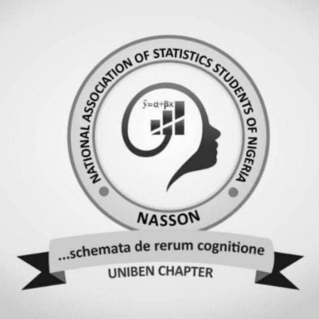
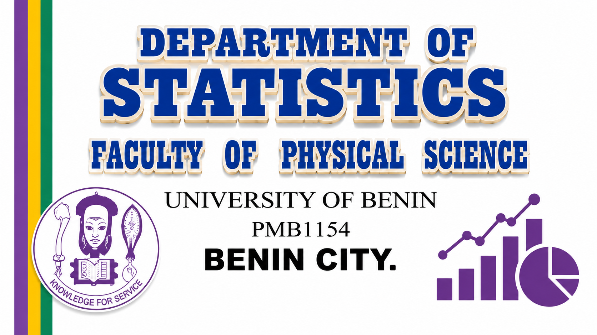

Department of Statistics
Turning data into insight for informed decisions.
Started in October 2015 as a unit of the Department of Mathematics, the Programme is geared towards providing broad training in Statistics to ensure efficient management of industries, banks, and the nation's economy.

2Degree Pathways
2015Year Established
Theory &Methodology
Multi-Disciplinary Focus
Our Focus Areas
Breadth and Diversity of Statistics
Department Philosophy
A Multidisciplinary Approach
The Statistics department is an academic unit with interests in applications of Statistics to a wide variety of scientific disciplines. This is represented through strong research and training programs covering the breadth and diversity of the subject in theory, methodology, and practice.
Learn More About Us →
Admissions
4-Year Full Time Programme (UTME)
Candidates seeking admission into the 4-year degree programme must possess:
- At least five O'Level credit passes in WAEC SSCE/GCE/NECO SSCE/GCE, or TC II, in not more than two sittings.
- Subjects must include English Language, Mathematics, and at least three Science or Social Sciences Subjects (or a combination).
UTME Subject Requirements:
- Use of English
- Mathematics
- Any two science or social science subjects (or a combination).
Admissions
3-Year Direct Entry Programme
In addition to the UTME requirements, candidates may be considered for the 3-Year programme with any of the following:
- At least two A-Level passes (GCE/HSC) in Mathematics/Statistics and a relevant Science or Social Science (Economics, Accounting, Geography, Business Studies).
- A merit level pass in UNIBEN Diplomas: DDP, DSLT, DAIC, DME, DICE, Geology (DCS), Computer Science (DCS), Accounting/Banking, Maritime Studies (DMS), or JUPEB.
- An Upper Credit Diploma from other recognized Universities in the areas listed above.
- OND (Upper Credit) in Mathematics/Statistics, Computer Science, or SLT.
- HND (Lower Credit) in Mathematics, Statistics, Computer Science, or SLT.
- NCE (Credit level) in Mathematics and Statistics/Economics/Computer Science, with an overall Credit level pass.
- A B.Sc. degree in Sciences or Social Sciences with at least 3rd Class Honours.
Meet Our Leaders
Head of Department & Department Leaders

Head of Department
PROFESSOR AUGUSTINE IDUSERI
Student Photo Section

Classroom learning

Data practice